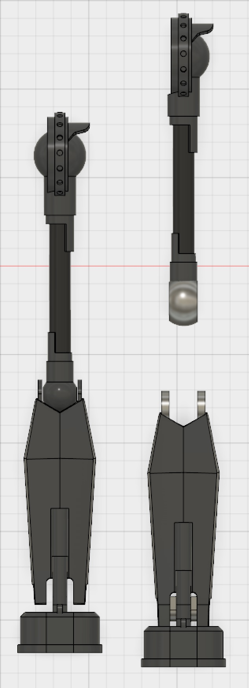
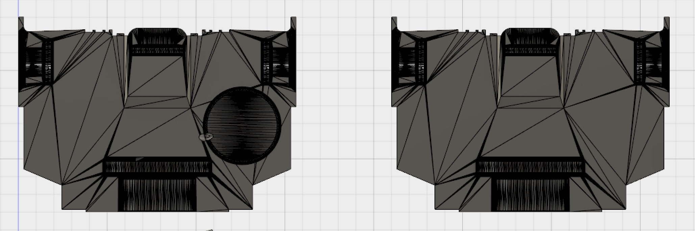
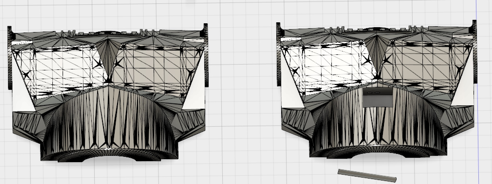
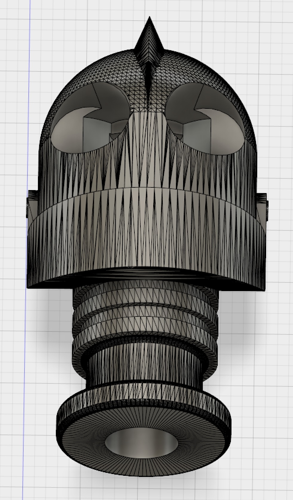
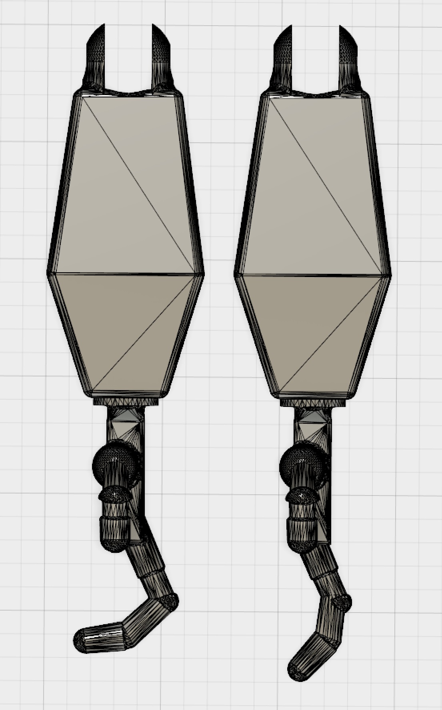

Iron Giant Model Continued
First what I did was make the legs articulate. While the original model did have arms that bent at the elbow the legs did not bend at the knee. So I made separated it into an upper and lower leg and designed a hole through it for a pin and modified each part so they'd fit together well and be able to move.
The next part I did was design a hole in the back half of the two torso halves to fit a CR2032 button cell battery. I found on the web a to size scale model of one and used that to cut out an appropriately sized hole in the torso. I sized up the battery model slightly to make there more room in case. After that I looked and couldn't find a model for the switch I wanted to use to size but I did find a model for a switch holder and created a reverse mold for a switch from that. I cut it out in the back half in a good place, and later made the hole deeper after printing it and seeing the switch stuck out a bit.
Once those were done I put some holes from the battery and the neck going to the battery hole for the wires to go. I put the hole above and below where the battery would rest so the positive and negative wires would be in the right place and not cross. The wires going to the neck would hook up to the LED in the head. After the first print I also modified the holes to be bigger as they were originally too small for the wires.
 Next I designed holes in the head for the led to go and for it to shine out the eyes. I found a LED model on the web and designed a cylinder to size to cut out of the head so I could slide the LED in up to the top. Then I designed holes where I'd put clear eyes and more holes that connected them to the LED cavity so it'd be able to shine through. Once that was completed I made eyes that fit in well in the head without sticking out if I had just made them cylinders.
The final designing I did was on the hands, the fingers were originally positioned at an awkward angle that looked unnatural. I cut up the hand into different pieces and adjusted the angle of the fingers to look a bit nicer on the model.
Once I got to the printing part there came a bit of issues. First was warping, the two halves of the body had the most issues with that and just didn't fit together. I had to print on other school printers with better beds and with PLA filament instead of ABS, and they came out a lot better. The pieces still didn't fit together well like at the joints or inserts and it's probably a combination of printer issues and maybe faulty design by the original poster of the iron giant file but they fit together after a lot of sanding and some gouging with a soldering iron. I also used the soldering iron to burn a dent into a side oh it's head to give it the trademark dent from the movie.
The electronics fit together well in my third design of the body, and once wired up it lit up well since I used a white plastic for the head. I kept the two halves together by drilling a screw hole on opposite sides of the body, careful not to screw in the battery cavity of the wire holes.

After fitting the parts all together I filled in the gaps between pieces with Instamorph and wood glue. I also needed to use Instamorph in the waist where the legs connect since they were loose. Finally after all that I painted the model with a nice metallic acrylic and the end result came out amazing. It was a lot of work but it ended up worth it.